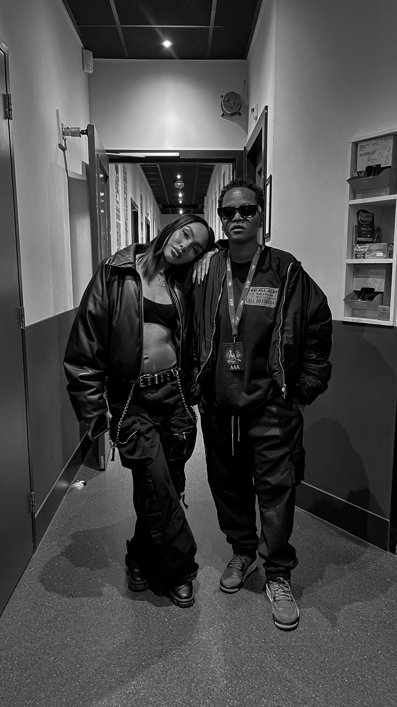

01Veel rennen
We spraken haar in de pauze van de show. Wat komt er kijken bij zo'n avond? "Heel veel rennen, dus goede cardio is belangrijk."
Daarnaast focus en voorbereiding. Van treatments tot moodboards, alles wordt doorgelopen. Ze is bij de generale repetities en weet zo wat ze kan verwachten.
In Paradiso werkte ze eerder voor Joeboy. Nu staan ze in het Carré.
02Festivals en same day edits
Bij Latino Gang doet Jessy de hele videoproductie. Op festivals stuurt ze fotografen en videografen aan, en ze doet same day edits. De beelden zijn dezelfde dag nog af, terwijl het festival nog loopt.
03Ik ben een productiehuis
Wat ze het liefst doet? Een lastige vraag, want ze vindt veel leuk en doet daarom ook veel. Maar wat ze nu doet, vindt ze het leukst: produceren voor artiesten, Grammy-artiesten, in Nederland en in het buitenland. En wegen maken voor de meiden in haar team, zodat zij zich kunnen ontwikkelen. Daar wordt ze blij van.
Hoe die meiden bij haar kwamen? Een van hen belde gewoon op. Ik heb hulp nodig, ik wil leren, ik wil filmen. Een zus had haar aangeraden om te vragen of ze mocht meelopen. Twee weken later waren ze begonnen, en dat is inmiddels twee jaar geleden. Jessy: "Dat is wel echt hoe het gegaan is."
“Ik ben een team, ik ben geen videograaf, ik ben een productiehuis.”
Wie een productie wil neerzetten, als artiest of als ondernemer, heeft meerdere mensen nodig. Op de schaal waarop zij content maakt zeker. Voor Jessy is dat vanzelfsprekend.


04Vertrouwen
Wie met een team op pad gaat, moet erop kunnen rekenen dat het goed komt. Hoe bouwde ze dat vertrouwen op bij artiesten? Het werk zelf, zegt ze, en haar netwerk. Dat netwerk groeide over de jaren. Mensen weten wat ze kunnen verwachten. Komt Jessy met een team, dan weten ze dat de kwaliteit er is.
05Hoe het begon
Jessy zit al sinds haar zesde of zevende in de muziekwereld. Als kind in New York had ze een Kodak-filmcamera, en via haar tante bij Columbia Pictures kwam ze op sets van grote producties.
In de mode zag ze hoe belangrijk een eigen beeldtaal is. Niemand kon haar visie precies zo neerzetten, dus leerde ze het zelf: filmen en editen. Haar eerste betaalde klus kwam van een vriendin uit de designwereld die visualizers voor clubs zocht. Zo'n klus leverde ongeveer 50 dollar op.
06Van een festival naar Los Angeles
Twee jaar geleden fotografeerde ze een artiest en zijn team op een festival. Daar ontmoette ze iemand, en drie maanden later zat ze in Los Angeles. Daar maakten ze een video, en vanaf dat moment ging het verder.
In 2024 was ze onderweg van Los Angeles naar Las Vegas met danseres Lea Crigger, voor de Latin Billboard Awards op het Rumbazo Festival. Er kwam een nummer voorbij en ze hadden meteen een idee. Ze stopten langs de weg, pakten de camera en draaiden This Life, een korte film over de denkwijze van een professionele danseres. Binnen een dag hadden duizenden mensen hem gezien.
07Als het niet loopt
Er zijn ook periodes dat het stilstaat: kansen die niet doorgaan, mails zonder antwoord, projecten die op het laatste moment sneuvelen. Haar manier om ermee om te gaan is stoppen met vergelijken en bij je eigen visie blijven.
“Rejection isn't always rejection, it's redirection.”
08Slow and steady
Haar advies aan creatives die willen staan waar zij nu staat is kort. Ze zegt het al jaren: slow and steady wins the race.
“Je moet niet snel willen gaan, maar je moet goed willen gaan.”
Wie weet waar hij naartoe wil, moet dat vooruitzicht vasthouden en niet te snel willen gaan. Het is ook wat ze de meiden in haar team meegeeft. Momentum is belangrijk, maar je gaat op je eigen tempo. Niet naar anderen kijken, in jezelf geloven.
Meer over Jessy: Canvas Rebel · richmondmediagrp.com